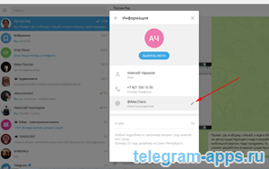
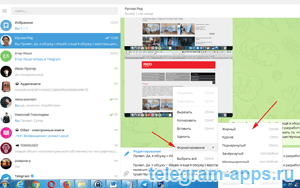

| Категория: | Общение | |
| Поддерживаемые ОС: | Windows 10 | |
| Разрядность: | 32 bit, 64 bit, x32, x64 | |
| Для устройств: | Компьютер | |
| Язык интерфейса: | на Русском | |
| Версия: | Последняя | |
| Разработчик: | Telegram Messenger |
Телеграм — мессенджер с продвинутой системой защиты общения, как приложение для компьютера. Установить Телеграм для Windows 10 можно вполне безопасно, мы не делаем скрытых галочек в установке. Программа появилась относительно недавно но сумела завоевать свою нишу среди других подобных платформ это говорит о том что функционал отличается от стандартов и нацелен на безопасность общения что в наше время очень ценится обычными пользователями.
|  |  |
 |
{kind=link}
{kind=link}
Telegram для Виндовс 10 на компьютер
Windows 10 — актуальная версия ОС, поэтому разработчики программ активно оптимизируют под нее продукты. Телеграм не исключение: после каждого обновления Windows 10 оперативно исправляются баги, если таковы присутствуют в работе приложения. Техническая поддержка Телеграм также нацелена решать вопросы, связанные с Windows 10: клиенты, при обращении к сотрудникам сервиса, получают массу инструкции для решения проблем, связанных с работой программы. На апрель 2020 года в Телеграме зарегистрировано 400 миллионов аккаунтов, причем большинство пользователей настольного ПК используют Виндовс 10.

У Телеграм есть отличия перед другими программами главная из которых это надежная защита личной информации: даже создатели не смогут читать переписку или передавать личную информацию третьим лицам без согласия сторон. Это стало возможным благодаря замене текста сообщений на шифр, который находится только у собеседников. Ключ шифрования уникален, его нельзя скопировать или передать, так как шифр зашит в программу и хранится только в памяти устройств.
Телеграм для версий windows:
Скачать Telegram для Windows 10 бесплатно
| Приложение | OS | Формат | Распаковщик | Версия | Интерфейс | Загрузка |
|---|---|---|---|---|---|---|
| Telegram (Телеграм) | Windows 10 | x64 | OpenBox | Бесплатно | на русском | |
| Telegram (Телеграм) | Windows 10 | x32 | OpenBox | Бесплатно | на русском |
Как установить Telegram для windows 10:
Запустите файл.

Ознакомьтесь с информацией и нажмите "Далее".

Нажмите "Далее", или снимите галочки с рекомендуемого ПО и нажмите "Далее". Если снять все галочки, рекомендуемое ПО не установится!

После всех шагов нажмите "Установить".
В Телеграм присутствуют стандартные функции мессенджеров: звонок, передача файлов в сообщениях, поиск людей по номерам телефона, стандартные смайлики, стикеры и другие. Но клиентов приложения ждут и фишки. Одна из них, функция создания в специальном боте новых стикеров которые, становятся доступными другим пользователям.
Удобно, особенно на работе не приходится доставать телефон, все на рабочем столе.
Скачала, приложение быстро
Работает стабильней, чем в телефоне.
Мне очень понравился этот мессенджер. Рекомендую.
Наконец-то хоть отсюда смогла установить, антивирусник молчал — вирусов точно нет, установка меньше минуты. Обычное приложение все как надо, на русском, все известные телеграм-каналы работают, чаты тоже. Нравится теперь тут по работе общаться, не боишься, что переписки сольют — потому что есть защита данных))
Шикарно. Спасибочки, это большой лайк!
Уже очень давно хотел установить телеграм на пк. Работает всё без зависаний и багов.
Подскажите, пожалуйста, а переписку в чатах Телеграм в виндовс-версии потом в телефоне видно будет?
Супер приложение для слабенького компьютера, плюс можно синхронизировать общение на нескольких устройствах.
на пк действительно удобнее пользоваться, когда дома за компом
Классная вещь, особенно удобно качать музыку, да и побыстрее будет, чем на телефоне
Телегой постоянно пользуюсь.
Намного удобней чем в телефоне группы юзаю багов не нашёл.
сиджу в различных тематических чатах ( в частности, о криптовалюте ).
нравится функциональность приложения я уверена в том, что мои сообщения не попадут третьим лицам!
Телеграм-это уникальная возможность пообщаться с единомышленниками, не боясь, что тебя забанят за непригодный контент. За это я его и люблю!
Многофункциональность, простая установка и регистрация, я довольна.
Здравствуйте! Можете мне сказать как скачать телеграм. Я скачиваю но не получается там говорить что этого типа не поддерживает Виндовс Айфон .Кагого типа поддерживает Виндовс Айфон скажите пожалуйста????????????
На главной странице есть ссылка на эпл стор с Телеграм, айфон не поддерживает исполняемые файлы смачивайте из магазина эпл.
Долго собирался установить мессенджер, но процесс ускорили «товарищи» из WhatsApp, своими заявлениями об изменении политики конфиденциальности. Это стало для меня «последней каплей воды, переполнившей бочку с порохом») Сейчас переустанавливаю Telegram под windows-10. До этого был 7-й…